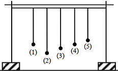
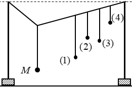
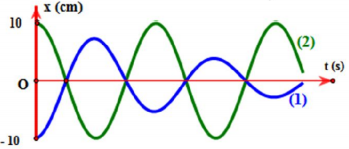

Bài 6 · Dao động tắt dần, cưỡng bức, cộng hưởng · 20 câu
PHẦN I. Câu trắc nghiệm nhiều phương án lựa chọn
Mỗi câu có 4 phương án, chỉ chọn một đáp án đúng (0,25 điểm).
1
Thông hiểu
Một người xách một xô nước đi trên đường, mỗi bước đi được 60 cm. Chu kỳ dao động riêng của nước trong xô là 1 s. Nước trong xô bị sóng sánh mạnh nhất khi người đó đi với tốc độ là
2
Thông hiểu

Khi làm thực hành về hiện tượng cộng hưởng cơ, ta có hệ thống các con lắc đơn bố trí như hình vẽ. Con lắc (1) là con lắc điều khiển, khi con lắc (1) dao động thì các con lắc còn lại cũng sẽ dao động. Kéo con lắc điều khiển (1) lệch khỏi vị trí cân bằng rồi thả nhẹ cho dao động. Không xét con lắc (1), con lắc dao động mạnh nhất là
3
Thông hiểu
Một vật chịu tác dụng của một ngoại lực cưỡng bức điều hòa F = 5cos 4πt (N). Biên độ dao động của vật đạt cực đại khi vật có tần số dao động riêng bằng:
4
Thông hiểu
Nhận định nào sau đây sai khi nói về dao động cơ học tắt dần?
5
Thông hiểu
Trong dao động của con lắc lò xo, nhận xét nào sau đây là sai?
6
Thông hiểu
Chọn câu sai:
7
Thông hiểu
Phát biểu nào dưới đây về dao động cưỡng bức là sai?
8
Thông hiểu
Dao động duy trì là dao động tắt dần mà ta đã
9
Thông hiểu
Chu kỳ dao động riêng của con lắc lò xo là $T_0$. Nếu ta cho điểm treo con lắc dao động điều hòa với chu kỳ $T$ thì con lắc dao động như thế nào với chu kỳ bao nhiêu?
10
Thông hiểu
Một vật dao động cưỡng bức dưới tác dụng của một ngoại lực biến thiên điều hòa với tần số $f$. Chu kì dao động của vật là
11
Thông hiểu
Trên hình vẽ là một hệ dao động. Khi cho con lắc M dao động, thì các con lắc (1), (2), (3), (4) cũng dao động cưỡng bức theo. Hỏi con lắc nào dao động mạnh nhất trong 4 con lắc?

12
Thông hiểu
Hai chất điểm dao động có li độ phụ thuộc theo thời gian được biểu diễn tương ứng bởi hai đồ thị (1) và (2) như hình vẽ. Nhận xét nào dưới đây đúng khi nói về dao động của hai chất điểm?

13
Thông hiểu
Một người xách một xô nước đi trên đường, mỗi bước đi dài 45 cm thì nước trong xô bị sóng sánh mạnh nhất. Chu kì dao động riêng của nước trong xô là 0,3 s. Vận tốc của người đó là:
14
Thông hiểu
Một người đèo hai thùng nước sau xe đạp, đạp trên đường lát bêtông. Cứ 3 m trên đường thì có một rãnh nhỏ, chu kì dao động riêng của nước trong thùng là 0,6 s. Vận tốc xe đạp để nước sóng sánh mạnh nhất (không có lợi) là:
15
Thông hiểu
Một người xách một xô nước đi trên đường, mỗi bước đi dài 40 cm. Chu kì dao động riêng của nước trong xô là 0,2 s. Để nước trong xô sóng sánh mạnh nhất thì người đó phải đi với vận tốc là:
16
Thông hiểu
Chọn phát biểu sai:
17
Thông hiểu
Phát biểu nào sau đây là sai khi nói về dao động tắt dần?
18
Thông hiểu
Hiện tượng cộng hưởng thể hiện càng rõ nét khi
19
Thông hiểu
Một hệ dao động điều hòa với tần số dao động riêng 4 Hz. Tác dụng vào hệ dao động đó một ngoại lực có biểu thức $f = F_0\cos(8\pi t + \pi/3)$ N thì
20
Thông hiểu
Phát biểu nào dưới đây không đúng khi nói về dao động tắt dần?